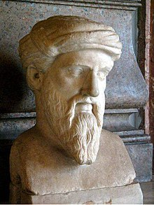
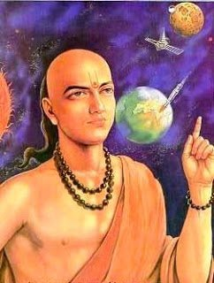
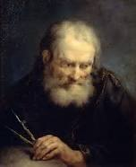
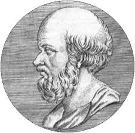

FAMOUS MATHEMATICIANS
SRINIVASA RAMANUJAN
Srinivasa Ramanujan was an Indian mathematician who lived during the British Rule in India. Though he had almost no formal training in pure mathematics, he made substantial contributions to mathematical analysis, number theory, infinite series, and continued fractions, including solutions to mathematical problems then considered unsolvable. Ramanujan initially developed his own mathematical research in isolation: according to Hans Eysenck: "He tried to interest the leading professional mathematicians in his work, but failed for the most part.
What he had to show them was too novel, too unfamiliar, and additionally presented in unusual ways; they could not be bothered". Seeking mathematicians who could better understand his work, in 1913 he began a postal partnership with the English mathematician G. H. Hardy at the University of Cambridge, England. Recognizing Ramanujan's work as extraordinary, Hardy arranged for him to travel to Cambridge. In his notes, Hardy commented that Ramanujan had produced groundbreaking new theorems, including some that "defeated me completely; I had never seen anything in the least like them before", and some recently proven but highly advanced results.

PYTHAGORAS
Pythagoras of Samos was an ancient Ionian Greek philosopher and the eponymous founder of Pythagoreanism. His political and religious teachings were well known in Magna Graecia and influenced the philosophies of Plato, Aristotle, and, through them, Western philosophy. Knowledge of his life is clouded by legend, but he appears to have been the son of Mnesarchus, a gem-engraver on the island of Samos, then ruled by the Persian Achaemenid Empire. Modern scholars disagree regarding Pythagoras's education and influences, but they do agree that, around 530 BC, he travelled to Croton in southern Italy, where he founded a school in which initiates were sworn to secrecy and lived a communal, ascetic lifestyle. This lifestyle entailed a number of dietary prohibitions, traditionally said to have included vegetarianism, although modern scholars doubt that he ever advocated for complete vegetarianism.
In antiquity, Pythagoras was credited with many mathematical and scientific discoveries, including the Pythagorean theorem, Pythagorean tuning, the five regular solids, the Theory of Proportions, the sphericity of the Earth, and the identity of the morning and evening stars as the planet Venus. It was said that he was the first man to call himself a philosopher ("lover of wisdom")[c] and that he was the first to divide the globe into five climatic zones. Classical historians debate whether Pythagoras made these discoveries, and many of the accomplishments credited to him likely originated earlier or were made by his colleagues or successors. Some accounts mention that the philosophy associated with Pythagoras was related to mathematics and that numbers were important, but it is debated to what extent, if at all, he actually contributed to mathematics or natural philosophy.

ARYABHATA
Aryabhata was the first of the major mathematician-astronomers from the classical age of Indian mathematics and Indian astronomy. His works include the Āryabhaṭīya (which mentions that in 3600 Kaliyuga, 499 CE, he was 23 years old) and the Arya-siddhanta.For his explicit mention of the relativity of motion, he also qualifies as a major early physicist
Writing Āryabhaṭīya and the Arya-siddhanta Indian mathematician Aryabhatta’s contribution include his work on providing an approximate value to pi. He likewise touched on the concepts of sine, cosine, and the place-value system.
ALBERT EINSTEIN
Albert Einstein was a German-born theoretical physicist who developed the theory of relativity, one of the two pillars of modern physics (alongside quantum mechanics). His work is also known for its influence on the philosophy of science. He is best known to the general public for his mass–energy equivalence formula E = mc2, which has been dubbed "the world's most famous equation". He received the 1921 Nobel Prize in Physics "for his services to theoretical physics, and especially for his discovery of the law of the photoelectric effect", a pivotal step in the development of quantum theory
The son of a salesman who later operated an electrochemical factory, Einstein was born in the German Empire but moved to Switzerland in 1895 and renounced his German citizenship in 1896.[5] Specializing in physics and mathematics, he received his academic teaching diploma from the Swiss Federal Polytechnic School in Zürich in 1900. The following year, he acquired Swiss citizenship, which he kept for his entire life. After initially struggling to find work, from 1902 to 1909 he was employed as a patent examiner at the Swiss Patent Office in Bern.

ARCHIMEDES
Archimedes of Syracuse was a Greek mathematician, physicist, engineer, inventor, and astronomer.Although few details of his life are known, he is regarded as one of the leading scientists in classical antiquity. Considered to be the greatest mathematician of ancient history, and one of the greatest of all time, Archimedes anticipated modern calculus and analysis by applying concepts of infinitesimals and the method of exhaustion to derive and rigorously prove a range of geometrical theorems, including: the area of a circle; the surface area and volume of a sphere; area of an ellipse; the area under a parabola; the volume of a segment of a paraboloid of revolution; the volume of a segment of a hyperboloid of revolution; and the area of a spiral.
His other mathematical achievements include deriving an accurate approximation of pi; defining and investigating the spiral that now bears his name; and creating a system using exponentiation for expressing very large numbers. He was also one of the first to apply mathematics to physical phenomena, founding hydrostatics and statics, including an explanation of the principle of the lever. He is credited with designing innovative machines, such as his screw pump, compound pulleys, and defensive war machines to protect his native Syracuse from invasion.
ISSAC NEWTON
Sir Isaac Newton was an English mathematician, physicist, astronomer, theologian, and author (described in his own day as a "natural philosopher") who is widely recognised as one of the most influential scientists of all time and as a key figure in the scientific revolution. His book Philosophiæ Naturalis Principia Mathematica (Mathematical Principles of Natural Philosophy), first published in 1687, laid the foundations of classical mechanics. Newton also made seminal contributions to optics, and shares credit with Gottfried Wilhelm Leibniz for developing the infinitesimal calculus.
In Principia, Newton formulated the laws of motion and universal gravitation that formed the dominant scientific viewpoint until it was superseded by the theory of relativity. Newton used his mathematical description of gravity to prove Kepler's laws of planetary motion, account for tides, the trajectories of comets, the precession of the equinoxes and other phenomena, eradicating doubt about the Solar System's heliocentricity. He demonstrated that the motion of objects on Earth and celestial bodies could be accounted for by the same principles. Newton's inference that the Earth is an oblate spheroid was later confirmed by the geodetic measurements of Maupertuis, La Condamine, and others, convincing most European scientists of the superiority of Newtonian mechanics over earlier systems.
RENE DESCARTES
René Descartes was a French philosopher, mathematician, and scientist. A native of the Kingdom of France, he spent about 20 years (1629–1649) of his life in the Dutch Republic after serving for a while in the Dutch States Army of Maurice of Nassau, Prince of Orange and the Stadtholder of the United Provinces. One of the most notable intellectual figures of the Dutch Golden Age, Descartes is also widely regarded as one of the founders of modern philosophy.
Many elements of Descartes's philosophy have precedents in late Aristotelianism, the revived Stoicism of the 16th century, or in earlier philosophers like Augustine. In his natural philosophy, he differed from the schools on two major points: first, he rejected the splitting of corporeal substance into matter and form; second, he rejected any appeal to final ends, divine or natural, in explaining natural phenomena.t\ In his theology, he insists on the absolute freedom of God's act of creation. Refusing to accept the authority of previous philosophers, Descartes frequently set his views apart from the philosophers who preceded him. In the opening section of the Passions of the Soul, an early modern treatise on emotions, Descartes goes so far as to assert that he will write on this topic "as if no one had written on these matters before." His best known philosophical statement is "cogito, ergo sum" ("I think, therefore I am"; French: Je pense, donc je suis), found in Discourse on the Method (1637; in French and Latin) and Principles of Philosophy (1644, in Latin).

ERATOSTHENES
Eratosthenes of Cyrene was a Greek polymath: a mathematician, geographer, poet, astronomer, and music theorist. He was a man of learning, becoming the chief librarian at the Library of Alexandria. His work is comparable to what is now known as the study of geography, and he introduced some of the terminology still used today.
He is best known for being the first person to calculate the circumference of the Earth, which he did by using the extensive survey results he could access in his role at the Library; his calculation was remarkably accurate.[2] He was also the first to calculate the tilt of the Earth's axis, once again with remarkable accuracy. Additionally, he may have accurately calculated the distance from the Earth to the Sun and invented the leap day. He created the first global projection of the world, incorporating parallels and meridians based on the available geographic knowledge of his era.
JOHN NAPIER
John Napier of Merchiston nicknamed Marvellous Merchiston, was a Scottish landowner known as a mathematician, physicist, and astronomer. He was the 8th Laird of Merchiston. His Latinized name was Ioannes Neper. John Napier is best known as the discoverer of logarithms. He also invented the so-called "Napier's bones" and made common the use of the decimal point in arithmetic and mathematics.
Napier's birthplace, Merchiston Tower in Edinburgh, is now part of the facilities of Edinburgh Napier University. Napier died from the effects of gout at home at Merchiston Castle and his remains were buried in the kirkyard of St Giles. Following the loss of the kirkyard there to build Parliament House, he was memorialised at St Cuthbert's at the west side of Edinburgh.
GEORG CANTOR
Georg Ferdinand Ludwig Philipp Cantor was a German mathematician. He created set theory, which has become a fundamental theory in mathematics. Cantor established the importance of one-to-one correspondence between the members of two sets, defined infinite and well-ordered sets, and proved that the real numbers are more numerous than the natural numbers. In fact, Cantor's method of proof of this theorem implies the existence of an infinity of infinities. He defined the cardinal and ordinal numbers and their arithmetic. Cantor's work is of great philosophical interest, a fact he was well aware of.
Cantor's theory of transfinite numbers was originally regarded as so counter-intuitive – even shocking – that it encountered resistance from mathematical contemporaries such as Leopold Kronecker and Henri Poincaré and later from Hermann Weyl and L. E. J. Brouwer, while Ludwig Wittgenstein raised philosophical objections. Cantor, a devout Lutheran, believed the theory had been communicated to him by God.Some Christian theologians (particularly neo-Scholastics) saw Cantor's work as a challenge to the uniqueness of the absolute infinity in the nature of God - on one occasion equating the theory of transfinite numbers with pantheism – a proposition that Cantor vigorously rejected.
GEORGE BOOLE
George Boole was a largely self-taught English mathematician, philosopher and logician, most of whose short career was spent as the first professor of mathematics at Queen's College, Cork in Ireland. He worked in the fields of differential equations and algebraic logic, and is best known as the author of The Laws of Thought (1854) which contains Boolean algebra. Boolean logic is credited with laying the foundations for the information age
Boole maintained that: No general method for the solution of questions in the theory of probabilities can be established which does not explicitly recognise, not only the special numerical bases of the science, but also those universal laws of thought which are the basis of all reasoning, and which, whatever they may be as to their essence, are at least mathematical as to their form
EMMY NOETHER
Amalie Emmy Noether was a German mathematician who made many important contributions to abstract algebra. She has also a famous theorem in mathematical physics known as Noether's theorem. She invariably used the name "Emmy Noether" in her life and publications. She was described by Pavel Alexandrov, Albert Einstein, Jean Dieudonné, Hermann Weyl and Norbert Wiener as the most important woman in the history of mathematics. As one of the leading mathematicians of her time, she developed the theories of rings, fields, and algebras. In physics, Noether's theorem explains the connection between symmetry and conservation laws.
Noether was born to a Jewish family in the Franconian town of Erlangen; her father was a mathematician, Max Noether. She originally planned to teach French and English after passing the required examinations, but instead studied mathematics at the University of Erlangen, where her father lectured. After completing her dissertation in 1907 under the supervision of Paul Gordan, she worked at the Mathematical Institute of Erlangen without pay for seven years. At the time, women were largely excluded from academic positions. In 1915, she was invited by David Hilbert and Felix Klein to join the mathematics department at the University of Göttingen, a world-renowned center of mathematical research. The philosophical faculty objected, however, and she spent four years lecturing under Hilbert's name. Her habilitation was approved in 1919, allowing her to obtain the rank of Privatdozent.
EVARISTE GALOIS
Évariste Galois was a French mathematician and political activist. While still in his teens, he was able to determine a necessary and sufficient condition for a polynomial to be solvable by radicals, thereby solving a problem standing for 350 years. His work laid the foundations for Galois theory and group theory, two major branches of abstract algebra, and the subfield of Galois connections. He died at age 20 from wounds suffered in a duel.
While many mathematicians before Galois gave consideration to what are now known as groups, it was Galois who was the first to use the word group (in French groupe) in a sense close to the technical sense that is understood today, making him among the founders of the branch of algebra known as group theory. He developed the concept that is today known as a normal subgroup. He called the decomposition of a group into its left and right cosets a proper decomposition if the left and right cosets coincide, which is what today is known as a normal subgroup. He also introduced the concept of a finite field (also known as a Galois field in his honor), in essentially the same form as it is understood today.
SOPHIE GERMAIN
Marie-Sophie Germain was a French mathematician, physicist, and philosopher. Despite initial opposition from her parents and difficulties presented by society, she gained education from books in her father's library, including ones by Leonhard Euler, and from correspondence with famous mathematicians such as Lagrange, Legendre, and Gauss (under the pseudonym of «Monsieur LeBlanc»). One of the pioneers of elasticity theory, she won the grand prize from the Paris Academy of Sciences for her essay on the subject.
Her work on Fermat's Last Theorem provided a foundation for mathematicians exploring the subject for hundreds of years after. Because of prejudice against her sex, she was unable to make a career out of mathematics, but she worked independently throughout her life. Before her death, Gauss had recommended that she be awarded an honorary degree, but that never occurred. On 27 June 1831, she died from breast cancer. At the centenary of her life, a street and a girls’ school were named after her. The Academy of Sciences established the Sophie Germain Prize in her honor.
reference:www.wikipedia.com